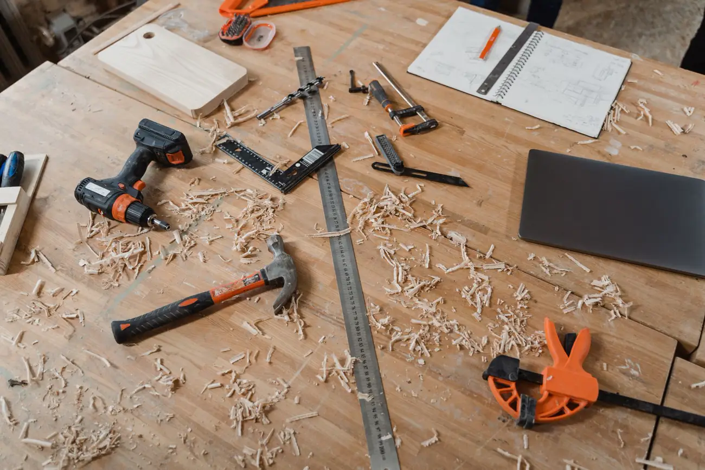
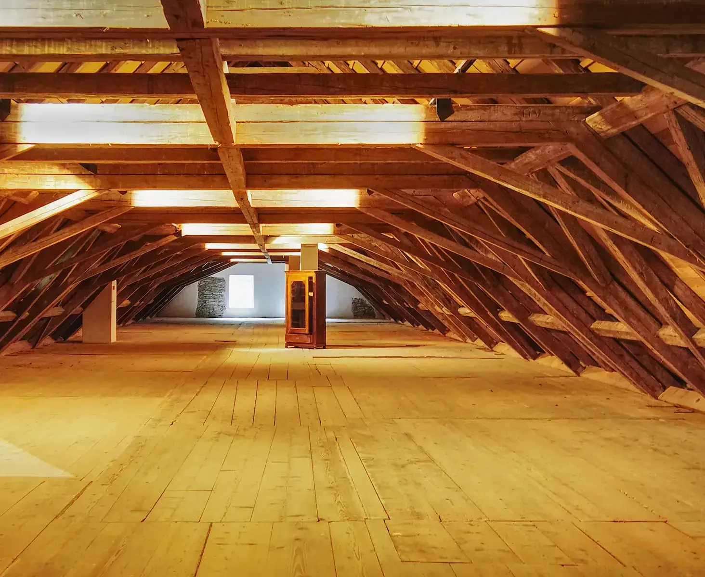
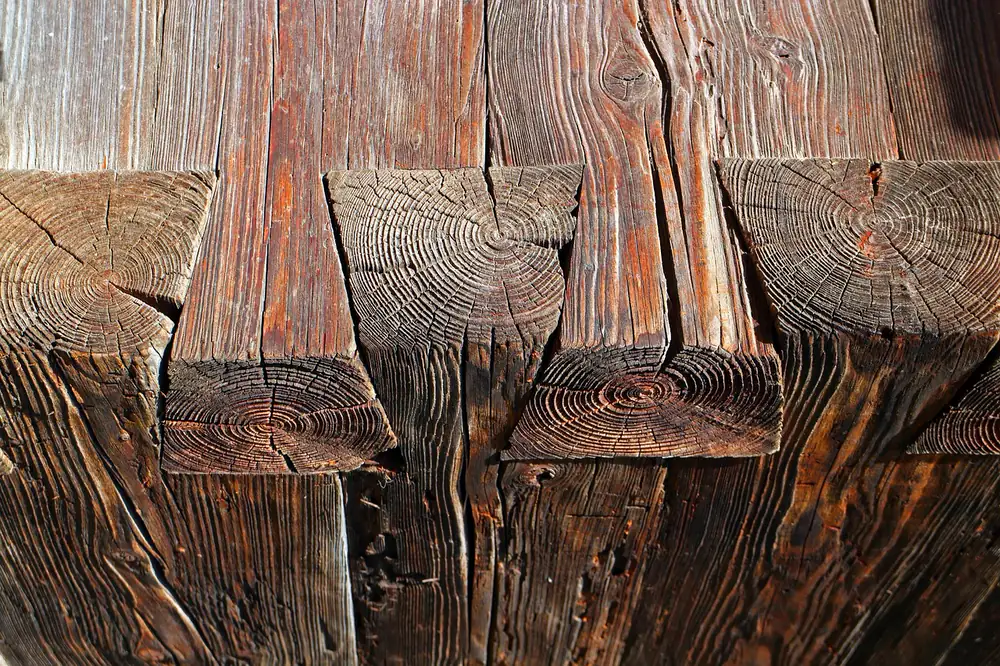
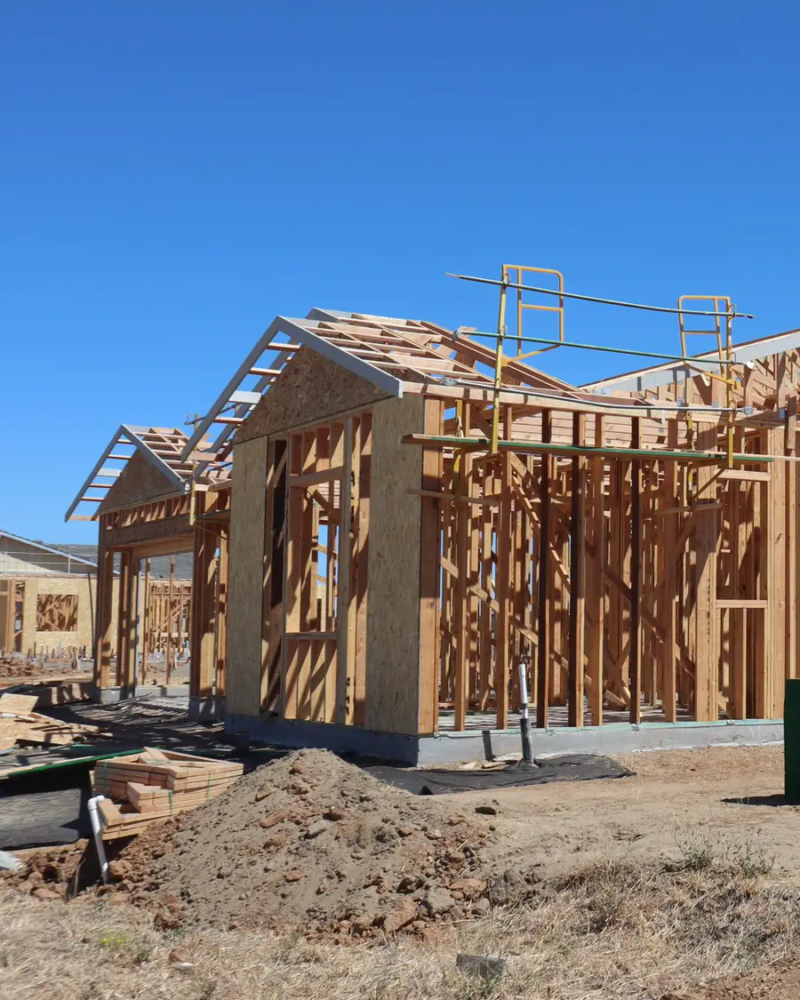
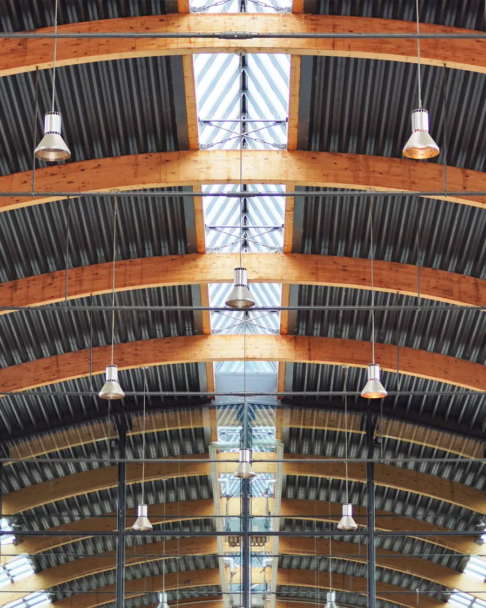
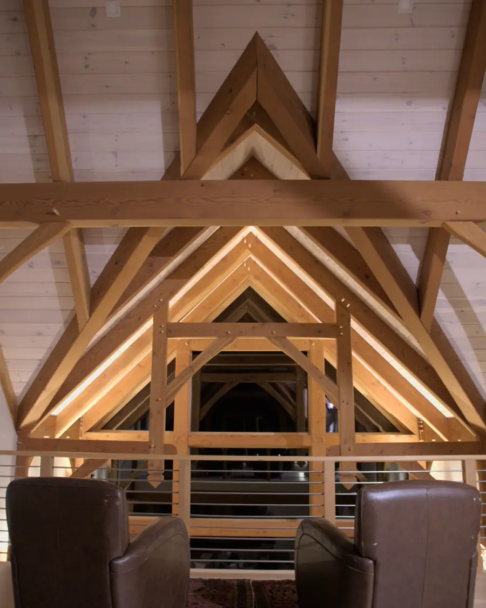
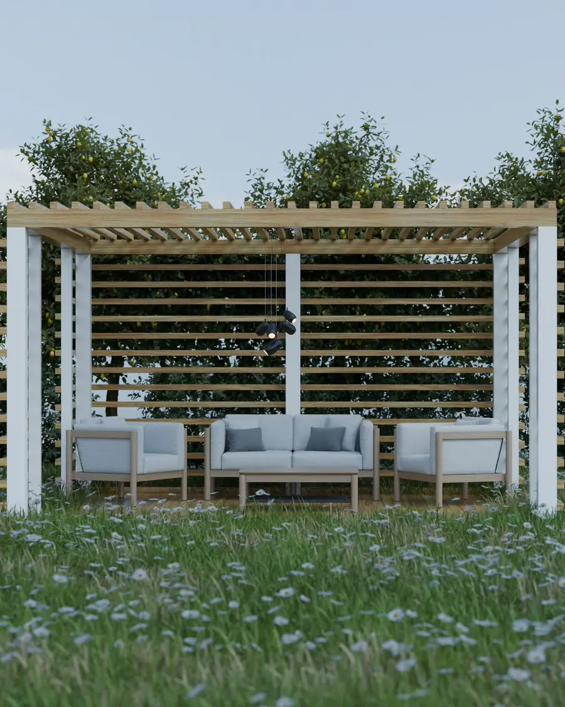
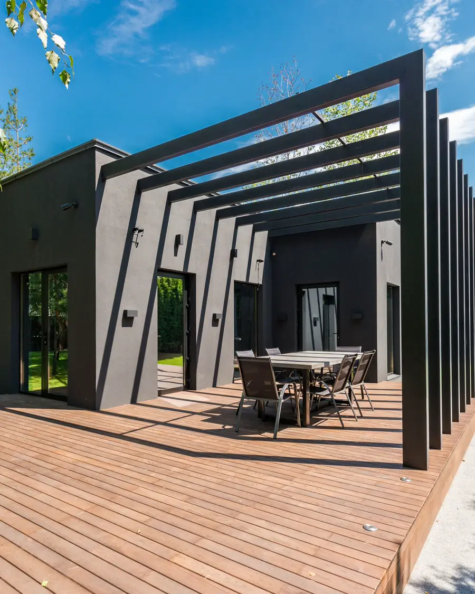
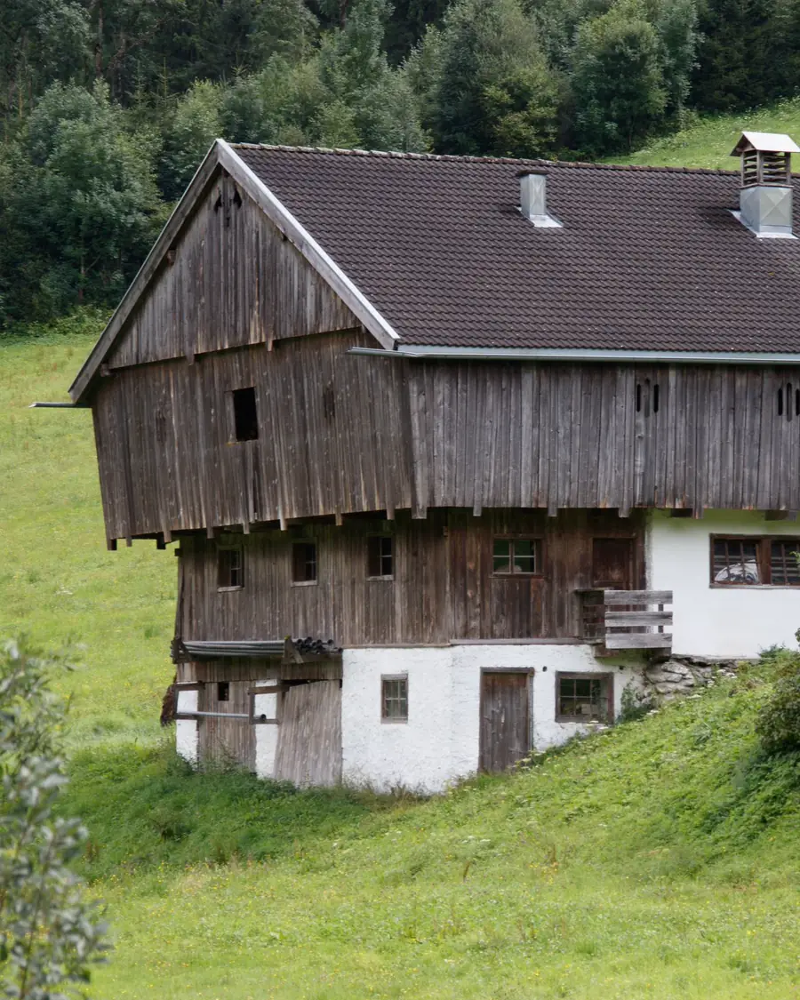

Domy szkieletowe
Prefabrykacja ścian i stropów w suchym warsztacie, montaż na budowie w kilka dni.
Prefabrykacja w warsztacie
Konstrukcje drewniane
Domy szkieletowe, więźby, drewno klejone. Każde złącze liczone, cięte i składane z namysłem — w warsztacie, a potem na Twojej działce.
Oferta

Prefabrykacja ścian i stropów w suchym warsztacie, montaż na budowie w kilka dni.
Prefabrykacja w warsztacieCiesielka tradycyjna i wiązary inżynierskie. Nietypowe kąty, duże rozpiętości.
Belki, słupy i łuki BSH dla hal i pawilonów.
Lekkie formy wykończone z precyzją mebla.
Modrzew, dąb, termodrewno. Odwodnienie od pierwszego rysunku.

Ratujemy stare więźby i stodoły: złącza, wzmocnienia, konserwacja.
Realizacje

2024Szkielet · Podhale

2023Drewno klejone · nad jeziorem

2024Renowacja · Małopolska

2023Pergola · Wrocław

2022Taras i schody · Kraków

2022Adaptacja · Beskid Niski
Zdjęcia i dane realizacji są poglądowe (autorzy: Unsplash, Pexels, Pixabay) — w gotowej stronie pokażemy Twoje prawdziwe projekty.
Proces
Każdy etap opisujemy w wycenie, więc wiesz, za co płacisz i kiedy co się wydarzy.
Poznajemy działkę, budżet i to, jak chcesz mieszkać. Bez zobowiązań.
Rysunki, obliczenia i dobór przekrojów. Wycena z rozpisaniem każdego etapu.
Elementy powstają w warsztacie — sucho, dokładnie, niezależnie od pogody.
Szkielet lub więźba stają w kilka dni. Plac zostaje czysty.
Przegląd po pierwszej zimie i wskazówki konserwacji na lata.
Opinie
„Szkielet stanął w cztery dni, plac został czysty. Dom pachnie lasem — to jest ta różnica.”
„Nietypowy kąt i duża rozpiętość — rozwiązali to elegancko i bez dopłat.”
„Pergola po dwóch zimach wygląda jak pierwszego dnia. Detale połączeń są piękne.”
„Każdy etap opisany, każdy termin dotrzymany. Rzadkość w tej branży.”
Opinie i oceny powyżej są przykładowe — w gotowej stronie pojawią się prawdziwe wypowiedzi klientów i dane z profilu Google.
Pytania
Nie ma tu Twojego pytania? Zadzwoń albo napisz — odpowiadamy zwykle tego samego dnia roboczego.
Cena zależy od metrażu, standardu wykończenia i fundamentów. Po rozmowie i przeglądzie projektu przygotowujemy wycenę rozpisaną na etapy — bez ukrytych pozycji.
Prefabrykacja w warsztacie zajmuje zwykle kilka tygodni, a sam montaż szkieletu — kilka dni. Dokładny harmonogram dostajesz razem z wyceną.
To zależy od rodzaju obiektu i jego powierzchni. Dom jednorodzinny zwykle wymaga pozwolenia lub zgłoszenia, a małe wiaty i altany bywają zwolnione. Pomagamy zebrać dokumenty i sprawdzić lokalne wymagania.
Do konstrukcji — suszonego drewna klasy C24 lub drewna klejonego GL24h. Do tarasów i elewacji — m.in. modrzewia, dębu i drewna modyfikowanego termicznie.
Tak, pod warunkiem dobrego projektu: chronimy drewno konstrukcyjnie (okapy, odwodnienie, wentylacja), a nie tylko chemicznie. Po pierwszej zimie robimy przegląd i podpowiadamy, jak dbać o konstrukcję.
Odpowiedzi mają charakter przykładowy — doprecyzujemy je razem z Tobą.
Kontakt